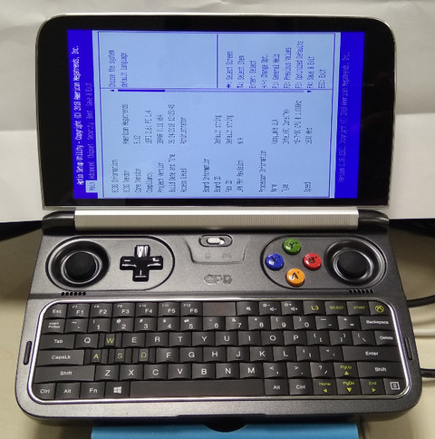
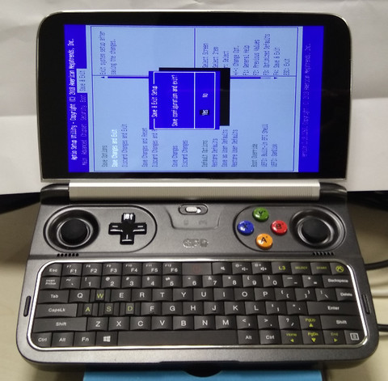
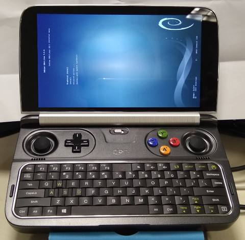
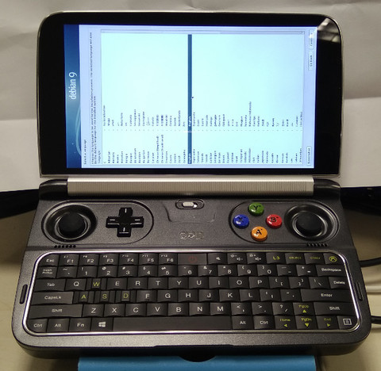
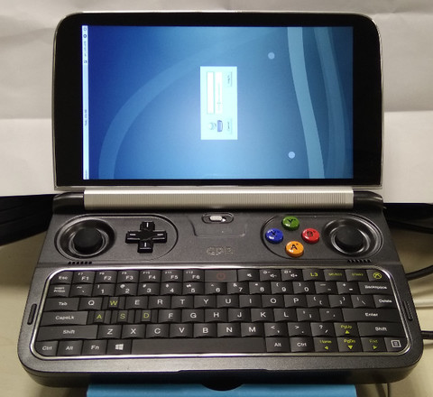
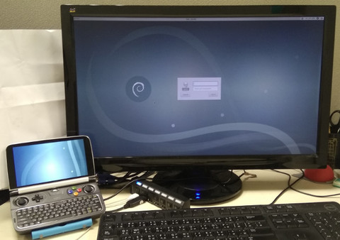
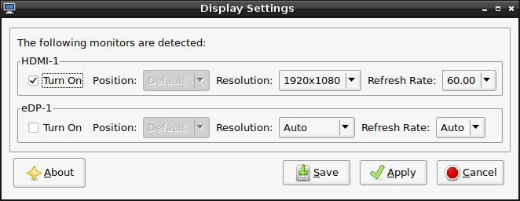
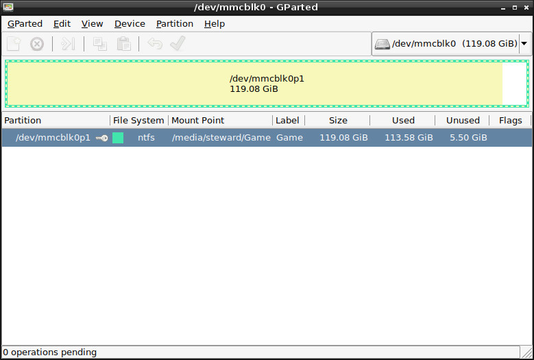
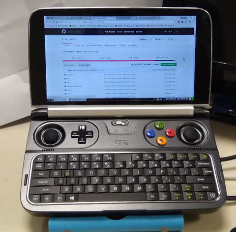

Steward
分享是一種喜悅、更是一種幸福
掌機 - GPD Win2 - Debian 9.0 - 安裝系統(LXDE)
安裝方式：
1. 下載https://cdimage.debian.org/debian-cd/current/amd64/iso-dvd/debian-9.5.0-amd64-DVD-1.iso
2. 製作USB開機碟
3. 開機按Delete鍵進入BIOS模式並且設定USB開機

修改後，儲存離開

選擇GUI安裝介面

英語鍵盤

接著預設安裝就可以完成(記得在選擇套件時，選擇LXDE)

HDMI輸出

透過Micro HDMI輸出，可以達到1920x1080的解析度

MicroSD支援128GB

Fix Wifi
$ sudo apt-get remove wicd* $ sudo apt-get install firmware-iwlwifi $ sudo apt-get install network-manager-gnome
Fix Screen
$ xrandr -o right

Fix Backlight
$ sudo chmod 0777 /sys/class/backlight/intel_backlight/brightness $ echo 2000 > /sys/class/backlight/intel_backlight/brightness
Fix Gamepad
$ sudo modprobe xpad $ sudo chmod 0777 /sys/bus/usb/drivers/xpad/new_id $ echo 0x0079 0x18d4 > /sys/bus/usb/drivers/xpad/new_id